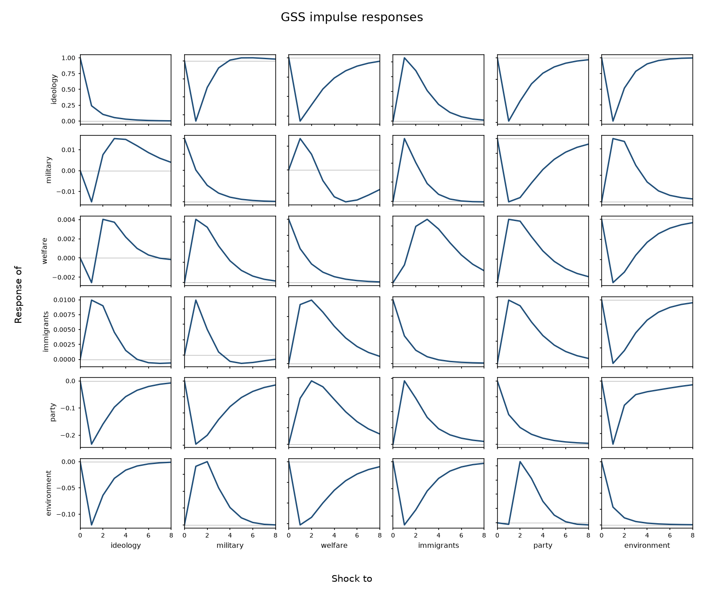

Software
The Nepaul-Stern Model of Attitude Stability and Constraint
When to use this model
The Nepaul-Stern Model of Attitude Stability and Constraint is for panel surveys in which the same people answer the same attitude questions more than once. That includes the General Social Survey (GSS) panels, the American National Election Studies (ANES) panels, and British Election Study (BES)-style panels.
It is for answers on Likert scales (strongly agree to strongly disagree, liberal–conservative, party identification). It is aimed at studies that measure several related attitudes together. Waves can be unevenly spaced. People can miss a wave, or skip an item, and stay in the analysis. Covariates such as age or education can be included.
Questions it answers
- Stability. How stable are people’s attitudes over time?
- Constraint. How much does one attitude move with, or constrain, another?
- Where the variation comes from. How much of the variation in answers comes from lasting individual differences, how much from short-run change, and how much from measurement noise?
- A shock. If one attitude is pushed, how does that push show up in the other attitudes over later waves?
- Covariates. How do age, education, and similar characteristics relate to the attitudes?
The software estimates these quantities together, for the whole panel. An attitude in one wave is allowed to depend on the attitudes that came before it, including when a wave was missed or an item was left blank.
Two packages are ready, both named attitudedyn. One is for R and one is for Python. They run the same calculations. A Stata interface to the same core is planned.
The model, and the General Social Survey estimates, are reported in Nepaul and Stern (2026). Cite that paper, and read it for what the estimates mean.
Nepaul, Alecia, and Steven Stern. 2026. “A Dynamic Discrete Choice Approach to Attitude Stability and Constraint.” Political Analysis 34: 490–509. https://doi.org/10.1017/pan.2026.10034.
